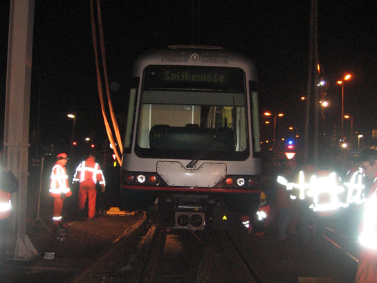
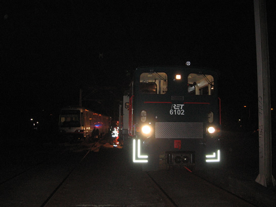

Metro ontspoord op wisselcomplex
- vrijdag 05 december 2008 16:14
- Geschreven door Joachim
Gistermiddag omstreeks 16.00 uur, ontspoorde metrostel 5416, welke als wagendienst 561 met daarachter de 5414 en 5403 op weg waren naar Ommoord. Het metrostel ontspoorde op wissel 1280 (spoor 2). Dit wissel is onderdeel van wisselcomplex Alexander II, ter hoogte van de President Rooseveltweg in Rotterdam-Ommoord.

Rijtuig 5416 op kop, ontspoord, en daarachter de niet-ontspoorde 5414 en 5403.
De metrostellen waren op weg naar Ommoord, maar kwamen niet verder dan wisselcomplex Alexander II.
Spoor en rijtuig raakten aanzienlijk beschadigd tijdens de ontsporing.
Om de kruising weer vrij te maken voor het verkeer, werden de rijtuigen 5414 en 5403 afgekoppeld en op station Graskruid geparkeerd.
De ontsporing gebeurde met een lage snelheid. Er zijn geen gewonden of slachtoffers gevallen. De metrotrein werd na de ontsporing ontruimd door RET-personeel. Rijtuig 5416 liep vooral schade op aan de draaistellen. De schade beperkte zich niet tot het metrorijtuig. Ook de baan liep schade op, onder andere aan bekabeling en bevestigingspunten van de spoorstaven.
Het eerste draaistel, onder de kop van de 5416, raakte het spoor volledig bijster.
Het achterste draaistel, stond voor een klein deel nog in het spoor.
De spoorbevestiging raakte aanzienlijk beschadigd.
Gedurende het hersporen en bergen van het rijtuig, dat meer dan negen uur duurde, werd er tijdelijk enkelspoorbedrijf gereden van en naar station Binnenhof. Tevens werden er bussen ingezet, voor passagiers met bestemming Nesselande.
Voor de bergingswerkzaamheden van de ontspoorde 5416 konden beginnen, werd aan het eind van de middag het rijtuig door de 5414 enkele meters in de richting van de gelijkvloerse en nabijgelegen kruising President Rooseveltweg getrokken. Op deze manier zou de hijskraan, bedoeld om het ontspoorde metrostel weer in het spoor te takelen, er makkelijker bij kunnen.
Rijtuig 5414 wordt ingezet voor het deels verplaatsen van rijtuig 5416.
Omstreeks 20.30 uur arriveerde locomotief 6201, welke assisteerde bij de berging van rijtuig 5416. Iets later, omstreeks 20.40 uur, komt ook de hijskraan van bergingsbedrijf Sarens aan. Het opbouwen van deze kraan duurde ongeveer 20 minuten.
Locomotief 6102 arriveert.
Om 22.45 werd het metroverkeer van en naar Ommoord stilgelegd. De spanning werd van de bovenleiding gehaald, zodat het metrorijtuig op een veilige manier in de sporen gezet kon worden. Eenvoudig was dit niet. Het metrostel was eerder op de middag door de 5414 richting de kruising getrokken en stond nu als het ware klem tussen twee spoorstaven. Locomotief 6201 heeft daarop het metrorijtuig enkele centimeters teruggeduwd, waardoor het draaistel los kwam. Daarnaast werd dit ook gedaan met behulp van vijzels.
De takels worden aan het metrorijtuig bevestigd.
Om het draaistel in het spoor te zetten, waren er in dit geval vijzels bij nodig.
Iets later: het eerste (achterste) draaistel staat in het spoor.
De drie draaistellen van metrorijtuig 5416 werden allen één voor één herspoord. Het metrorijtuig kon niet in één keer herspoord worden, omdat het daarvoor te ver van de kraan stond. De maximale belasting van de kraan was op het uiterste punt negentien ton.
Nadat het eerste draaistel herspoord was, werd de metro een stuk richting de President Rooseveltweg gesleept. In eerste instantie zou locomotief 6201 dit doen. Echter, deze kreeg dat niet voor elkaar. Uiteindelijk kwam er een lier aan te pas, van bergingsbedrijf Tieleman, welke zowel de metro als de locomotief enkele meters vooruit trok.
De locomotief en het metrostel werden voortgetrokken door een lier van Tieleman.
Direct daarna werd begonnen met het hersporen van het middelste draaistel. Na enige moeite stond het draaistel weer op de twee gangbare spoorstaven. Ook hier werd het rijtuig samen met locomotief 6201 enkele meters vooruit getrokken door de lier, zodat de kraan het derde draaistel kon hersporen.
Als tweede wordt het middelse draaistel herspoord.
En ook dit gaat goed, het middelste draaistel staat weer in het spoor.
Het derde draaistel werd snel in het spoor gezet. Toch was dit draaistel het meest beschadigd. Dit draaistel was immers als eerste het spoor uitgelopen en was hierbij enkele andere spoorstaven en beton tegengekomen. Toen het rijtuig eenmaal weer helemaal in het spoor stond was het 00.30 uur, inmiddels was ook locomotief 6102 en materialenwagen 7101 (Pipowagen) aangekomen, voor herstelwerkzaamheden aan het spoor e.d.
Het laatste (voorste) draaistel wordt in het spoor getakeld.

Het gehele rijtuig staat nu met alle draaistellen in het spoor.

Nadat de remmen gelost zijn, kan het transport, met als trekkracht locomotief 6201 richting remise 's-Gravenweg vertrekken.

Locomotief 6102 en materialenwagen 7101 worden ingezet voor herstelwerkzaamheden aan het spoor.
Voordat het rijtuig op sleep kon met locomotief 6201, moesten alle remmen gelost worden. Dit nam enige tijd in beslag. Uiteindelijk vertrok het transport omstreeks 01.20 uur richting remise 's-Gravenweg. De toedracht van de ontsporing is onbekend.
Er wordt met man en macht gewerkt aan het herstellen van de sporen in wisselcomplex Alexander II.
 Bekijk video-impressie: "Slepen van metrorijtuig 5416"
Bekijk video-impressie: "Slepen van metrorijtuig 5416"
Incident station Hesseplaats
Net voordat de ontsporing plaatsvond op de President Rooseveltweg, vond er omstreeks 15.30 uur een incident plaats op station Hesseplaats, spoor 1. Een vrouw van 89 jaar, werd op onbekende wijze meegesleurd door een metrorijtuig. Volgens getuigen gebeurde het ongeluk toen de vrouw erachter kwam dat ze op het verkeerde station uitstapte. Ze bedacht zich, keerde zich om en stapte tussen de open ruimte waar twee metrorijtuig gekoppeld zijn, toen de metro al wegreed. Met zware verwondingen aan de benen werd de vrouw afgevoerd naar het ziekenhuis, alwaar zij later op de avond overleed.
 Bekijk nieuwsitem op mediatv.nl
Bekijk nieuwsitem op mediatv.nl
Aanrijding Burgaslaan
Een 16-jarig meisje is deze week als gevolg van haar verwondingen, opgelopen tijdens de aanrijding op de Burgaslaan vorige week woensdag, overleden. Het meisje lag al een week in coma. De politie heeft de zaak in onderzoek.
 Bekijk nieuwsitem aanrijding Burgaslaan
Bekijk nieuwsitem aanrijding Burgaslaan